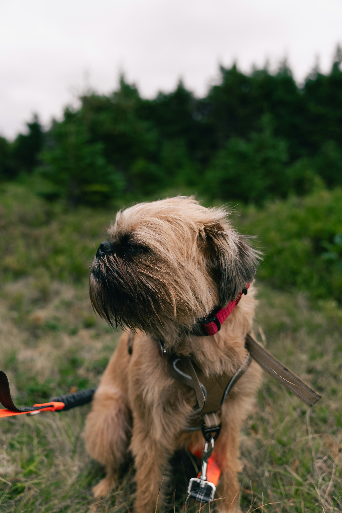
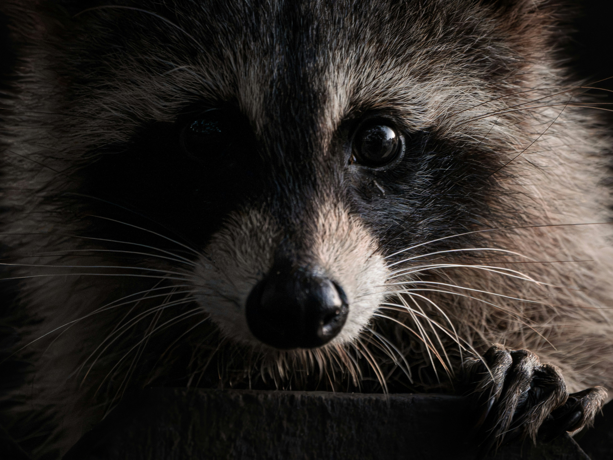

Page 1: Mammals
1. Brussels Griffon Dog

The Brussels Griffon is a toy dog breed named after their city of origin, Brussels, Belgium. Known for their distinctive facial features and expressive, almost human-like eyes, these small dogs are lively, intelligent, and affectionate companions with a bold personality.
Learn more about dogs on Wikipedia.
2. Raccoon

Raccoons are medium-sized mammals native to North America, easily recognized by their facial black mask and ringed tail. They are highly intelligent, adaptable omnivores with dexterous front paws that allow them to open containers and manipulate objects with ease.
Learn more about raccoons on Wikipedia.